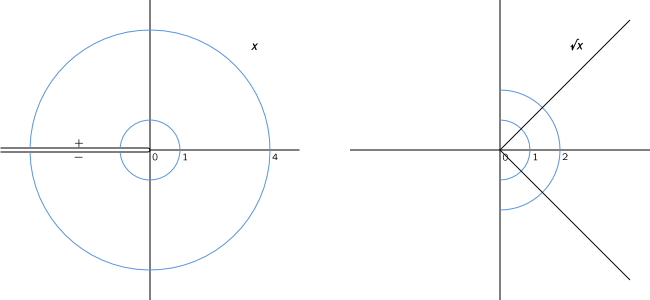
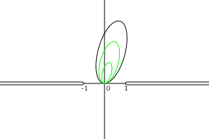
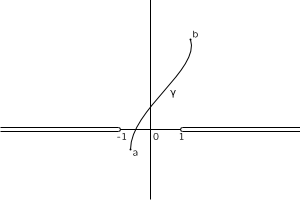
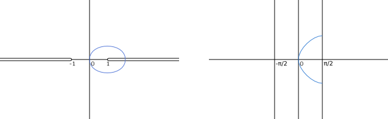
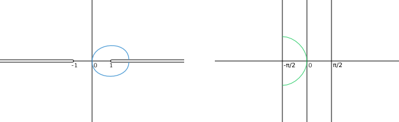
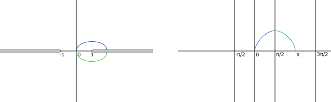
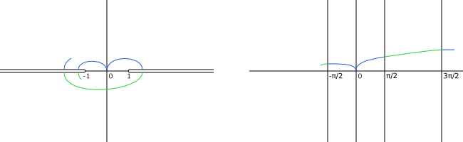
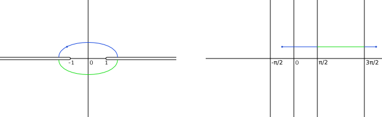

Integration of functions of genus 0
Construction and mapping properties
Let $K(x)$ denote the field of rational functions over a subfield $K$ of $\mathbf{C}$. (Here $x$ denotes the identity mapping of the Riemann sphere.) A quadratic function field $F$ of genus 0 over $K$ is an extension of $K(x)$ generated by an element $y$ satisfying an equation $y^2 = p(x)$ where $p$ is a polynomial of degree $2$ (or $1$) with coefficients in $K$. All elements of $F$ can then be written in the form $f(x) + g(x)y$, where $f$ and $g$ are polynomials in $K[X]$.
The element $y$ of $F$ is not a function in $\mathbf{C}$ in the ordinary sense. However, in suitable subdomains $U$ of $\mathbf{C}$ there exist actual functions $y_1$ satisfying $y_1^2 = p(x)$ in $U$. Each element of $F$ then corresponds to a function in $U$, when expressed in terms of such a branch $y_1$ of $y$. These function can be integrated as usual in $U$.
It is well-known that such integrals may be transformed to integrals of rational functions by a suitable (quadratic) change of the integration variable. (In fact, fields of genus 0 are rational. If $a$ is a root of $p$, then after substituting $y = t(x-a)$ into $y^2 = p(x)$ both $x$ and $y$ become rational expressions of $t$.) However, it is worth-while to consider these integrals without such transformations, because they have served as models for elliptic integrals.
To find convenient domains for branches of $y$, consider first the simple case of $y^2 = x$. None of the branches $y_1$ may be defined in a domain containing $0$, since $y_1^2$ cannot have simple zero. A standard domain of definition for the square root is the complement $U$ of the negative real axis. The real parts of the two square roots of any point in $U$ are non-zero. The roots with positive real part then define a single-valued branch $\sqrt{x}$.
The imaginary part of the branch is positive above the negative real axis, and negative below it, as indicated in the picture. Hence the branch $\sqrt{x}$ is maximal; it is impossible to extend it to a neighborhood of any point in the negative real axis.
The square roots with negative real part define another branch equal to $-\sqrt{x}$. Its imaginary part is negative above the negative real axis, and positive below it. Following Riemann we may imagine setting one copy of the domain $U$ on top of another and joining them crosswise along the negative real axis. On this two-sheeted Riemann surface the two branches combine to a single-valued holomorphic function $y$ with square $x$ (whose values are repeated on both sheets).
Consider now the general situation where $y^2 = p(x)$ and $p$ is a quadratic polynomial with distinct roots. By a linear transformation of the form $x\mapsto ax + b$ the roots may be moved to any two points in the complex plane. (The ground field $K$ may have to be extended to include the roots of $p$.) There are two standard choices for these points, $0$ and $1$, or the more symmetric pair of $-1$ and $1$.
We shall discuss the latter case. The transformed polynomial will then be $p(x) = c(x-1)(x+1) = c(x^2 - 1)$. The leading coefficient $c$ may also be replaced by rescaling $y$ (and possibly extending $K$ again). The standard choice is $-1$ to make $p(0)$ positive. Thus we arrive at the standard form $$ y^2 = 1 - x^2. $$
As shown in the previous note all integrals depending rationally on $x$ and $y = \sqrt{1 - x^2}$ can be reduced to a linear combination of the following integrals of the third kind $$ \int \frac{dx}{y},\qquad \int \frac{dx}{(x-c)y}\quad(c\ne \pm 1).$$ (There a no integrals of the first and second kind.)
We shall consider the first integral, which has two poles at infinity. Writing $1 - x^2 = (1+x)(1-x)$ we can construct branches of $y$ as follows. As seen above, $\sqrt{1+x}$ has a single-valued branch in the complement of the interval from $-1$ to $-\infty$ with values in the right-hand side of the complex plane. Similarly, $\sqrt{1-x}$ has a branch with the same property in the complement of the interval from $1$ to $+\infty$. Hence we can define $y$ as the product of these branches in the complex plane with two cuts from $-\infty$ to $-1$ and from $1$ to $+\infty$. Let this domain be be denoted by $V$. This branch with value $1$ at the origin will be called the positive branch; the other one is the negative branch.
The two-sheeted Riemann surface $S$ of $y$ can now be constructed by joining two copies of $V$ along the cuts. In one copy, or "sheet", $y$ is defined by the positive branch, and on the other one by the negative branch. We refer to them as the positive and the negative sheet.
It is important for integration that the domain $V$ is simply connected. In fact, any loop in $V$ can be contracted to a point in $V$ by reducing the scale: $x\mapsto tx$ while $t$ traverses the interval from $1$ to $0$.
It then follows from Cauchy's integral theorem that any holomorphic function $f$ in $V$ can be integrated, i.e., it has an indefinite integral, or antiderivative, $F$ in $V$ such that $F' = f$. Moreover, if $\gamma$ is a piecewise smooth path from $a$ to $b$ in $V$, then the path integral $$ \int_\gamma f(x)\,dx = F(b) - F(a) $$ only depends on the end points of the path.
This means that an antiderivative $F$ can be computed by starting from a fixed point, the origin, for example, and integrating along any convenient path to a variable point in $V$.
Now, consider the indefinite integral $F$ in $V$ of $f = 1/y$, where $y=\sqrt{1-x^2}$ is the positive branch $\sqrt{1+x}\sqrt{1-x}$ is taking the value $1$ at the origin. Then $1/y$ is real and positive in the open interval $]-1,1[$. Setting $F(0)=0$ we see that $$ F(t) = \int_0^t \frac{dx}{\sqrt{1-x^2}} $$ is real and strictly increasing in the open interval $]-1,1[$, with the limits $$ \lim_{t\to 1} F(t) = \int_0^1 \frac{dx}{\sqrt{1-x^2}} = \frac{\pi}{2} $$ and $\lim_{t\to -1} F(t) = -\pi/2$ at the end points. On the imaginary axis the values of $F$ are purely imaginary as may be seen by setting $x=it$ for real values of $t$: $$ F(it) = \int_0^t \frac{i\,d\tau}{\sqrt{1 + \tau^2}}. $$
The imaginary part of $y$ is negative above the interval $[1,\infty[$ (coming from the imaginary part of $\sqrt{1-x}$). Hence on the upper side $F$ has the limit $$ \lim_{\epsilon\to 0+} F(t + i\epsilon) = \frac{\pi}{2} + \int_1^t \frac{dx}{-i\sqrt{x^2 - 1}} $$ with real part $\pi/2$ and logarithmically growing positive imaginary part.
Below the interval the sign of the imaginary part is positive, and the limit of $F$ has negative imaginary part. The limit values of $F$ in the interval $]-\infty,-1]$ follow by symmetry ($F$ is odd, since $y$ is an even function). Hence we see that $F$ maps the domain $V$ onto the vertical strip formed by the points with real part between $-\pi/2$ and $\pi/2$. Thus the image of a loop extending to the interval $[1,+\infty[$ becomes an open path.
Consider now the negative branch $-\sqrt{1-x^2}$ of $y$ in $V$. One of the antiderivatives of $1/y$ is then $-F$. It maps the paths from the origin to the interval $[1,\infty[$ to paths ending at points with real value $-\pi/2$.
However, if we first integrate with the positive branch along a path from the origin to a point in the interval $[1,\infty[$, and then continue with the negative branch after passing over the interval to the other sheet in the Riemann surface, we obtain the antiderivative $-F +\pi$. It maps the domain $V$ onto the vertical strip containing the points with real part between $\pi/2$ and $3\pi/2$.
In the same way, if the path of integration extends over the interval $]-\infty,-1]$ we pass over to the region of points with real part in $[-3\pi/2, -\pi/2]$; or $[3\pi/2, 5\pi/2]$ when the path first crosses $[1,+\infty[$.
Hence we see that there is no single-valued indefinite integral of $1/y$ on the Riemann surface $S$ (the surface is not simply connected). The values of path interals do not depend on end points alone, even on the surface $S$ where $y$ in single-valued. The dependence on the path is fairly restricted, however. The integral of $1/y$ over a simple loop in $S$ has the value $2\pi$ (or $-2\pi$, in the opposite direction). It is called a period of the integral $\int dx/y$.
The value of the path integral of $1/y$ over a general loop (in $S$) is a multiple of $2\pi$, depending on the winding number of the loop around the interval $[-1,1]$. It follows that the integrals over any two paths with the same end points (in $S$) differ by a multiple of $2\pi$, at most. In fact, the difference of the integrals is the integral over the loop formed by one of the paths composed with the inverse of the other one.
The mapping properties of the multi-valued indefinite integral obtained by path integrals now become obvious. The positive sheet of $S$ is mapped onto the vertical strip between $-\pi/2$ and $\pi/2$ on the real axis and, in addition, to all strips obtained from it by translation by a multiple of $2\pi$. The negative sheet is mapped onto the strips remaining in between.
Inversion of the integral
Although the indefinite integral $\int dx/y$ is multiple-valued on the Riemann surface $S$, its inverse is single-valued. As seen above, the inverse is defined everywhere in the complex plane and has the period $2\pi$. Each vertical strip of width $2\pi$ is mapped onto the surface in one-to-one manner. Such strips are called fundamental regions of the mapping.
The inverse may be conveniently defined by giving its two coordinates, $x$ and $y$ (which are related by $y^2 = 1 - x^2$). From elementary analysis we know that for real arguments in the interval $[-1,1]$ the integral is the arcsine function: $$ \arcsin x = \int_0^x \frac{dt}{\sqrt{1-t^2}}. $$ This equality is still valid the complex domain $V$, since the derivative of the complex $\arcsin x$ is $1/\sqrt{1-x^2}$. So the indefinite integral denoted by $F$ above is, in fact, the principal branch of arcsine. The $x$-coordinate of the inverse mapping is therefore the sine, at least in the strip between $-\pi/2$ and $\pi/2$. This also holds in the strip between $\pi/2$ and $3\pi/2$ where the integral is $\pi - F = \pi - \arcsin$, since $\sin(\pi - z) = \sin(z)$. It follows that $y$ is given by the cosine. By periodicity we then obtain the inverse mapping for all complex values $$ x = \sin z,\qquad y = \cos z. $$ A rational function of $x$ and $y$ is transformed by these substitutions to a meromorphic function in the complex plane with a period $2\pi$ and only a finite number of zeros and poles in a fundamental region.
Other integrals of the third kind
The other basic integrals of the third kind $$ \int \frac{dx}{(x-c)y}\qquad (c\ne \pm 1) $$ are regular at the infinity but have two simple poles on the Riemann surface at $x=c$. They can be reduced to $\int dx/y$ by a fractional linear transformation $$ \xi = \frac{\alpha x + \beta}{\gamma x + \delta} $$ taking $c$ to $\infty$ $(\gamma c + \delta = 0)$ and leaving $\pm 1$ fixed $(\alpha+\beta = \gamma+\delta, -\alpha+\beta = \gamma-\delta)$. These three equations determine the coefficients up to a common multiplicative constant, which does not affect the mapping, however.
In the case $c=0$ the mapping is simply $\xi = 1/x$, and then the integral becomes $$ \int \frac{dx}{xy} = \int \frac{-\xi^{-2}d\xi} {\xi^{-1}\sqrt{1-\xi^{-2}}} = \int \frac{-d\xi}{i\sqrt{1 - \xi^2}}, $$ which differs from $\int dx/y$ by the factor $i$ only. The other cases may be handled similarly.